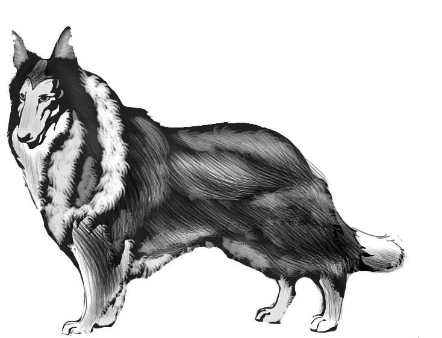

The Aldens reached home safely. They found that their grandfather knew all about the dog. He had seen their picture in the paper. But Violet had to tell him all about the rainy night in the empty house. Jessie told him about the roadside stand and Roy Smith. Benny told him about Big Jeko.
At last Mr. Alden said, “Were you satisfied with all those adventures, Ben?”
“Well, almost,” Benny replied. “There’s just one thing about this mystery that we don’t know. How did Smoky get from the parking lot to the empty house where we spent the night?”
“I can’t help you there,” Mr. Alden said. “But I have no doubt you four will solve that, too.”
Later on, Jessie had a telephone call from Mrs. Randall.
She said,“The Ashby dog show begins tomorrow.We are going to show Smoky. Our little dog has a new name, but I promised not to tell you. Can you come?”
Jessie laughed. She said, “Yes, I don’t even need to ask the others. We’ll be delighted to drive over to the show.”
“Come to our house first,” said Mrs. Randall. “Then you can meet Carl. And we will all go in two cars.”
“We’ll be there,” Jessie said.
“Fine,” said Mrs. Randall. “I want you to see Eric show off the dog. It’s quite a sight.”
The next day, as Henry drove along, Benny said, “I give up about that new name for Smoky. I’m sure they wouldn’t call him Shadow just because we did.”
“We’ll have to wait and see,” Violet said.
When the Aldens reached the Randalls’ yard, Carl ran out. He was a freckled boy in a Camp Mohawk shirt.
“You must be the Alden kids!” he called. “I’m Carl.”
They all went into the house,and Carl’s Uncle Eric shook hands with the Aldens.
“Tell me,” said Uncle Eric, “how did the dog get to you after he left the parking lot?”
“We’d like to know that,” answered Jessie. “I wonder if we’ll ever know.”
“Oh, we’ll know sometime!” said Benny.
Carl said, “Wait until you see how fine Smoky looks. He’s been washed and brushed. His paws and toes are cleaned and shined.”
“I can’t wait to see him!” Violet said.
“What about his new name?” Benny asked.
“You have to wait for that,” Carl said with a wink. “It’s time to go now.”
Henry followed the Randall car to Ashby. He had a little trouble parking, so the Randalls went in first with Smoky.
The Ashby dog show was held in a big hall. When the Aldens went in, they saw the steward standing right by the door.
He said to the young people, “Come in. Your friends are right over there.” He pointed to a large sign that said “Class—Skye Terrier.” Under the sign were two cages.
“That steward seemed to know us,”said Benny. “That’s funny.”

“Look!” Violet said. “Read what it says on Smoky’s cage. There’s Smoky’s new name!”
A big sign was printed with the words, “Smoky, the Bicycle Dog.”
People were standing around Smoky’s cage.
Someone said, “That’s the dog that was stolen.”
Another said, “He wasn’t stolen.”
“Who stole the Bicycle Dog?”
“What are you talking about?”
“Didn’t you read about it in the paper? Four children on bicycles found him.”
Mrs. Randall smiled at the Aldens. She said, “I guess you don’t know that everyone has seen the picture of you riding your bikes, with Smoky beside you. Tomorrow we will put another piece in the paper telling that you found the dog. Nobody stole him.”
Smoky was delighted to see the Aldens. He tried to get out of his cage, but he could not. He licked their hands through the wires.
“That cage makes me think of Big Jeko,” said Violet.
“It won’t be long now,” said Uncle Eric. “I am going to handle Smoky. But don’t forget, he is Carl’s dog. Next year he can handle him.”

“What do you mean, handle?” asked Benny. “I would think anyone could handle Smoky.”
“You’ll see,” Uncle Eric replied. “It means to show him off. The dog has to know what he is expected to do, too.”
The Aldens noticed there was one other dog in the same class with Smoky. It was a Skye terrier named Cinderella, for cinder, the color of ashes. It was a soft bluish-gray dog.
Then the show began. The four Aldens found places with the crowd behind the rope.
Everyone was excited. Everyone wanted his dog to get a first prize. Of course, everyone thought that Smoky, the Bicycle Dog, would win a first prize.
Dogs of all kinds were there.There were enormous dogs with soft white fur, and tiny dogs no bigger than a man’s hand. All of them were trained.
The first dog was a Great Dane. His master held his leash while the band played. The dog walked slowly. Then he stood still with his head up and his tail down.
Then came Cinderella.“My,”said Jessie, “hear the people clap!”
And then came Smoky.Uncle Eric knew exactly what to do, and so did Smoky. Henry said, “Now hear them clap! Even louder than for Cinderella.”
The judges for the dog show watched every dog closely. They noticed how the dogs looked and how they acted.
Later on,the judges went around putting ribbons on the cages. The crowd followed them to see which dogs were winners.Then what a surprise! Nobody could believe it. Smoky, the Bicycle Dog, had the second prize, a red ribbon, and the blue ribbon went to Cinderella!
Carl said, “Well, never mind. I like red better than blue anyway.”
“I don’t,” said Uncle Eric. “But I’m not surprised.”
“Aren’t you surprised?” Jessie asked Mrs. Randall.
“No. I’ll explain. Smoky’s trip didn’t do him any good. He wasn’t dried when he got wet in the rain. He wasn’t washed. A dog must be in perfect condition to win the blue ribbon in this show.”
“But wait till next year!” said Uncle Eric.
Suddenly Ben said,“Looktwins! Exactly alike.”
“One in pink and one in blue,” said Violet in a low voice.
Jessie said, “They are coming this way. I think they are looking for Smoky.”
A smiling woman and the two little girls came through the crowd.
“We want to see our dog,” said the twin in pink. “My name is Laurie.”
“Your dog?”asked Benny.“You mean the Bicycle Dog?”
“Well, he isn’t really ours. But we saw him twice, and we wanted him very much. My name is Joy.”
The lady said, “We are the Fullers. My girls just love that dog. They saw him in a parking lot in Essex.”
“Oh, yes,” said Laurie. “He was running around the parking lot.”
“Where were you?” asked Uncle Eric.
“We were in the back of the station wagon,” replied Joy. “We can see everything. We called him and called him, but he ran off. Then we saw the same dog at a vegetable stand way out in the country.”
“Well,” said Benny, “that settles that. Nobody stole him.”
“But they tried to, Ben,” Henry said. “Don’t forget that.”
“I’ll never forget that,” said Benny.
Then Uncle Eric said, “Did you girls see what happened to Smoky that day in the parking lot?”
“Oh, yes,” said Laurie.
“Oh, no,” said Joy. “All we know is that he ran out of the parking lot and right across the road.”
“And he wasn’t even run over,”Laurie added.
“No,” agreed Uncle Eric without a smile. “I should say he got across the road safely. You don’t know which way he went after that?”
“Oh, yes, we know which way he went. Do you know that shortcut in Essex to the old back road? Well, that’s where he was going. Right to that old country road.”
“We hoped he would find his way home, because the next night it rained.Did you find him?”
“He found us,” said Benny. “He climbed in our window to get out of the rain.On that old country road.”
Henry asked, “And you saw him again at a roadside stand?”
“That’s right,”said Joy.“My father says Smoky will get first prize in any dog show next year. We want to say hello to him.”
Smoky seemed to know the little twins. He tried to get out of the cage, and he licked their hands and whined.
A policeman had been walking around the show all day. Now he came walking up to the Aldens. He said to Henry, “You kids want to help me? I hear that you had a bit of trouble with a man and a woman who tried to get your dog.”
“That’s right,” Henry answered.
“Would you know them again,if you saw them?” asked the officer.
“We would!” said Benny.
The officer looked at the four Aldens and smiled. He said, “Well, we have a couple at the police station. Tomorrow will you come with me and tell me if they are the same ones you saw?”
“We certainly will,” answered Henry.

“That’s all I want,” the officer said with a wink. “You all agree?”
“Yes, sir,” Jessie said. “They tried twice to get the dog.”
“Good,” the policeman said. “We found them with two stolen poodles and a Scottie that didn’t belong to them. That man and woman will go back where they came from, but they will pay a great big fine!”
“They deserve it!” Benny said. “I hope they won’t do it again.”
“They won’t,” promised the man. He laughed.“They have policemen on the West Coast, too, you know.” He turned and went away.
Jessie said,“Well, Mrs. Fuller, you heard that. I guess things will be all right now.”
The dog show was over. Everyone was packing up to go. The Randalls went home with Smoky and the Aldens went straight home to Greenfield.
Grandfather met them on the front porch. “How was the show?” he asked.
The four young people sat down on the porch and told Mr. Alden the whole story.
Violet told about Smoky’s new name and how the twins had helped solve the last puzzle.
Benny said, “But I’m awfully disappointed that Smoky didn’t get the first prize. People liked him the best.”
“I’m sorry myself,” said Grandfather. “But there was a reason. And don’t forget, Ben, somebody always has to come in second.”
And this was something Benny Alden never forgot.
Then Watch came out to see his children. Benny opened the screen door and let him out. He lay down on the porch.
Benny said, “Hello, Watch.” He knelt down and scratched the dog’s rough head. Watch lifted his nose.
Benny said, “I like you best, Watch. You don’t whine or yelp or howl or bark.”
Then they all had to laugh, because what did Watch do? He barked!